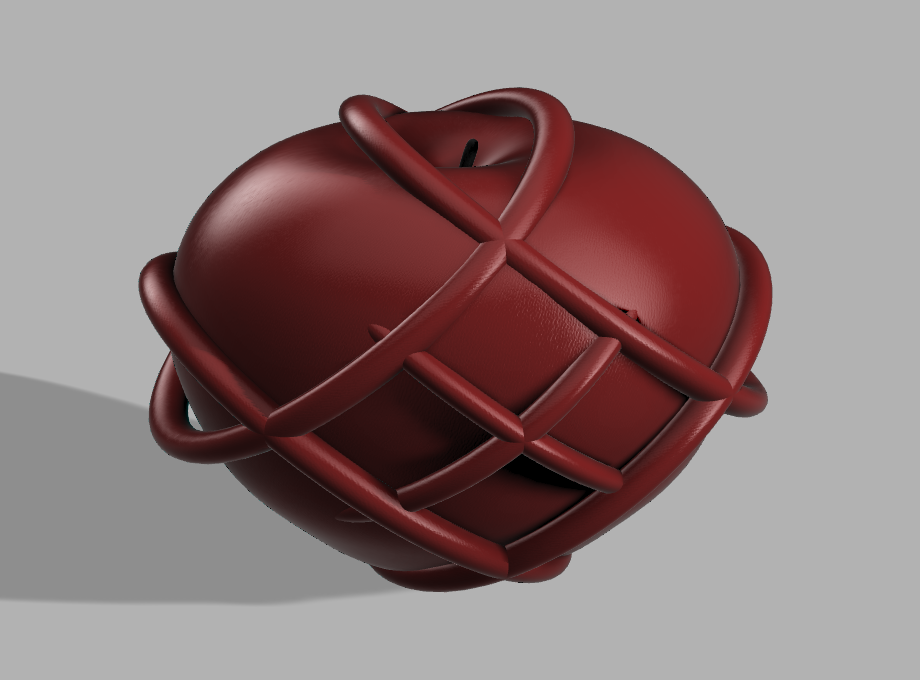
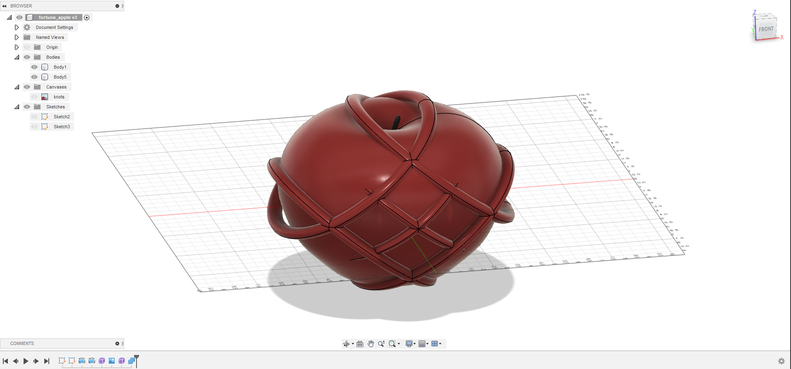
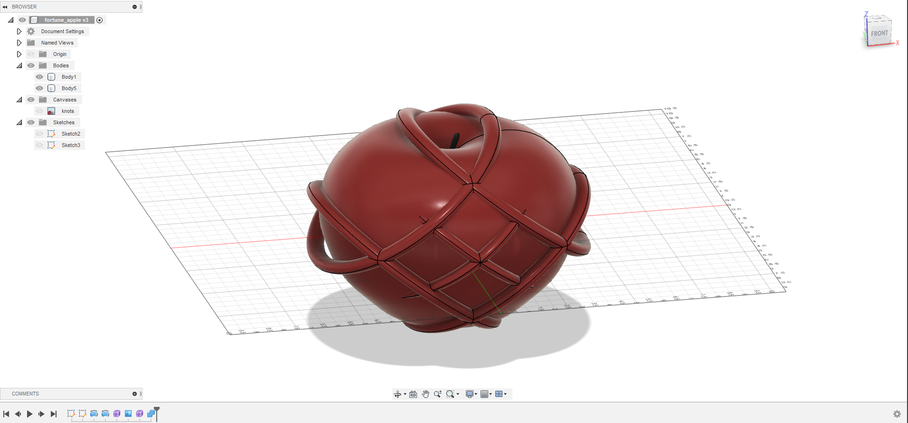

Phase 3: Concept
Idea #1

Ultimate Eyes
In 2040, an unknown company announces its advanced technology, Ultimate Eyes glasses. The glasses contain the majority of the functionality
from other glasses in the market.
It can be sunglasses, sport type glasses, or glasses for near-sightedness and far-sightedness, and even for age-related farsightedness.
The customer can simply buy and insert the chip from their official website and insert it into the slot on the side of the glasses to update the data and functions.
Then the glasses will adjust the lenses to fit the user's eyes with a particular function. The special about the glasses is the eye recognition function.
It allows the user to use eye recognition for the command and control of the computer and smartphone.

Idea #2
Fortune Apple
In the year 2030, massive earthquakes happened across the world. Nature was destroyed during the earthquakes.
An extreme amount of unknown gases released from the earth, and 50% of the atmosphere have been polluted, and it continues spreading.
The citizens in the countries that were covered by these unknown gases were starting to have negative symptoms after breathing it. According to the victims described, they began with having a fever and headache for two days.
In the two days, they were feeling weak and loss of strength for doing anything. Two days after, they started having a sign of bad luck that causes little trouble to them in daily life. More importantly, it continues growing.
After a month, the pollution area had extended to 80% worldwide. The bad news is one of the earliest victims had died from deadly bad luck symptoms. Within three months, hundreds of thousands of people were suffering bad luck.
Over hundreds of people were wounded and sent to the hospital after experiencing bad luck. The situation was similar to the last COVID-19 pandemic in the 2020s. This time, scientists from all areas and from around the world gather together for the antidote.
Geologists analyzed the very first location of where the gases were released and traveled to find the antidote. They saw strange scenery after arrived at the destination; they saw an apple tree grew near a 4 feet long fissure.
The weirdest scene was the apple. It had this unique Chinese Fu knot shape that grew from the apple. Without hesitation, the geologists started to put on the protective suit and walked near the exit of the gas, and approached the apple tree.
They collected the sample of the unknown gas and a few apples from that apple tree back to the laboratory. Six months after the team brought back the sample and apple. The scientists are analyzing them for the antidote.
Finally, after days and nights of experiments and lab testing, the first antidote is created. The fortune apple contained a cure vaccine from the laboratory. The news was announced to the world and sell.
The effects of the fortune apple were eating one in a day helps to reduces 20% of bad luck, and two for 50%. In a total of three apples per day to reduce up to 90% of the bad luck away for surviving from deadly bad luck. The effect will then disappear after 24 hours.
Phase 4: Fusion model
Link: Fortune Apple


